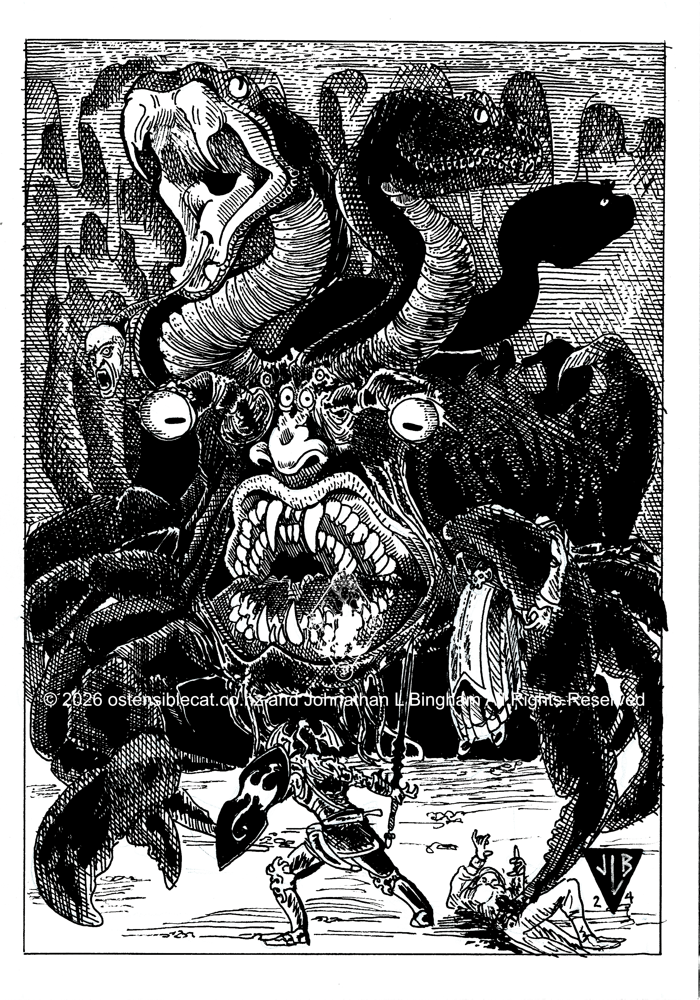

Bleak Forest
The Fated Road
Created by Johnathan L Bingham

Overview
You have been fated to end the world - or at least bring the current cycle to its next stage. The Bleak Forest Engine is built around the premise that the world is stalled, stuck in a segment of the Cosmic Cycle where every day is defined by suffering, grief, and strife. Agents of the Adversary seek to keep it this way. As an agent of the Fates, you endure and will ultimately prevail, but the level of adversity you must endure to see your task through is yet to be determined. Every Bleak Forest campaign follows the Fated Goal; the world-ending task Fate has chosen you for, and every Ordeal you complete is a step along it. Ordeals grow with the map and with your character: Minor Ordeals save a village, Moderate Ordeals save a city or a district, and Major Ordeals save a region. Each tier of Ordeals carries you through a band of Degrees of the Road, and a final Ordeal, the Reckoning, ends the Goal.
The Fated Goal is a path that ultimately leads to the Adversary. This path follows a sequence of interrelated tiers of events and tasks. The pieces nest and are defined as follows:
- Goal: the single purpose that ties the campaign together, its Adversary, and its Reckoning. Rolled once, on 1d6.
- Ordeal: a place in trouble with a hidden Cause. Each Goal has six Ordeals at each tier.
- Task: what must be done to put the place right. An Ordeal has 2, 3 or 4 tasks.
- Encounter: a scene on the way to finishing a task: a fight, a hazard, a witness or a temptation.
- Fragment: a clue. One Fragment reveals each task, and one more reveals the Cause.
- Omen: the sign that a Prepared Ordeal has begun.
- Thread: the Cause Fragment of a Major Ordeal. Threads lead to the Reckoning.
Ordeals on the Road
The Fated Road runs on the rules in Challenges and Ordeals, which is the full and final word on how Fragments, Omens, Challenges and Ordeals work. This page adds the campaign around them: the Goal, its Adversary, Holds, Threads and the Reckoning. The table below is a summary for quick reference; where it and the rules differ, the rules win.
| Ordeal | Band | On the road | Scale | Tasks | Task BAM! | Decisive BAM! | Fragments (False) |
|---|---|---|---|---|---|---|---|
| Minor | Degrees 1 to 3 | 5 | A village or site | 2 | Average (13) | Difficult (16) | 3 (1) |
| Moderate | Degrees 4 to 5 | 6 | A town, city or district | 3 | Difficult (16) | Challenging (19) | 4 (2) |
| Major, from the Goal | Degrees 6 to 9 | 6 | A region | 4 | Challenging (19) | Formidable (22) | 5 (3); the Cause is a Thread |
| Major, general | Degrees 6 to 9 | 4 | A region | 3 | Challenging (19) | Formidable (22) | 4 (2); no Thread |
| Reckoning | 9th Degree | 1 | The Adversary’s seat | 5, plus 1 per Hold | Formidable (22) | Inconceivable (25) | 5 Threads and the Heart |
Encounters, creatures and footprints for each tier are in Ordeal Structure and Ordeal Scale. A full road is 22 Ordeals, counting the Reckoning.
What the road adds
- Goal tables. Each Goal’s own Ordeals name their place, tasks, encounters, Fragments, Omen and what success brings, so you do not roll them on the Ordeal Generator.
- Holds. A failed Ordeal on the road, or a near miss, gives the Adversary a Hold.
- Threads. The Cause Fragment of each of the Goal’s own Major Ordeals is a Thread. Five Threads and the Heart open the Reckoning.
- The favourite lie. Each Adversary has a favourite lie, which is one of the False Fragments in its Moderate and Major Ordeals.
- Signature Taint. Each Goal’s own Ordeals carry its signature Taint, the mark of its Adversary.
- Challenges by band. Each character may face one Challenge per band, its tier matching the band, and weave it into an Ordeal.
- Doom. The Goal’s Adversary takes the place of the Abrikoth (see Doom).
Where the rules are
- Fragments, Preparation, and Omens: Fragment forms, Prepared, Omens and their timing. Threads are below.
- Red Herrings: False Fragments, testing them, and Insight.
- Challenges: one per band, and woven Challenges.
- Ordeal Scale: footprints, sites, where Fragments lie and where the Omen falls.
- Ordeal Structure: tasks and the encounters within them.
- The decisive check, Success, Near miss and Failure and Blights.
- Setbacks and the Ruin Die.
- Party Size: roles, and encounters and enemies by party size. Companions as Seconds.
- Travel, Terrain and the Danger Die inside a footprint.
The Fated Goal
Roll 1d6 once, at the start of the campaign, to choose the Goal Fate has set for the characters. Every Goal is the same promise kept differently: the world is dying, and something is holding it in its death. The characters must see the ending through so the new age can begin.
| 1d6 | Goal | The world is held by | The characters must | The Adversary |
|---|---|---|---|---|
| 1 | The Unending Autumn | A rotting autumn that will not give way to winter | Bring the Great Winter, so the rot freezes clean and the thaw can come | The Ember Court and the Hearth-Mother |
| 2 | The Chained Gate | The dead, who cannot pass on | Free the dead and open the Gate of Ending | The Ossuary Lords and the Lych of the Gate |
| 3 | The Grafted Tree | A Crown-Tree rotten at the heart, kept alive with stolen life | Fell the Crown-Tree and plant its seed | The Evergreen Court and the Graft-Queen |
| 4 | The Held Tide | Stagnant marsh behind the dams that hold back the cleansing flood | Break the dams and let the Black Tide scour the land | The Dykemasters and the Chained God beneath |
| 5 | The Unfallen King | A king who has hidden his death, and a land that withers under him | Find the king’s death and deliver it to him | The Undying Court and the Unfallen King |
| 6 | The Sleeping Devourer | The Devourer that must eat the old age, sung asleep | Unsing the lullaby and wake the Devourer | The Lullaby Choir and the Cantor |
Building the road
The road begins during Starting a Campaign: the Goal is rolled and the first Minor Ordeal is seeded before the first session. These are the steps the road follows from there.
- Roll the Goal. Read its premise, Adversary and Reckoning aloud, or keep the Adversary hidden until the first Thread.
- Roll each Ordeal when it is needed. When the characters are ready for a new Ordeal, roll 1d6 on the Goal’s table for their band. Reroll an Ordeal already used. Over the campaign you will use 5 of the 6 Minor Ordeals and all 6 Moderate and all 6 Major. Once a tier’s six are spent, roll the rest of that tier’s Ordeals (4 more Major) on the general Ordeal Generator, set in the Goal’s world: they count towards Degrees, and failing one gives the Adversary a Hold, but they carry no Thread. These general Major Ordeals run at the Moderate structure: 3 tasks, the Moderate number of encounters for the party, and 4 Fragments with 2 False among them. They keep Major BAM!s, creatures, scale and Doom restoration, and count as Major Ordeals. A full road is 5 Minor, 6 Moderate and 10 Major Ordeals (see The Nine Degrees).
- Place it on the map at the scale its tier needs (see Ordeal Scale).
- Seed its Fragments. Put each Fragment where its form says it is found, inside the footprint, with its False Fragments among them. The players can learn of an Ordeal from its first Fragment, a Rumour, or a Danger Die Special result.
- Run it using Ordeal Structure.
- When a character stands at 9th Degree and the party holds five Threads and the Heart, run the Reckoning.
Running Ordeals from the general Ordeal Generator off the road is still allowed. Such an Ordeal counts towards Degrees, but it adds nothing to the Goal: it has no Thread and gives the Adversary no Hold.
The road’s map
The road grows outward from where it begins, so build its map in three rings of Overland hexes, one for each band. A full road needs about 270 to 330 Overland hexes: a radius of 9 to 10 hexes from the starting place, or about 150 to 170 km across.
| Ring | Radius from the start | Overland hexes | Across | About the size of | Holds |
|---|---|---|---|---|---|
| Minor | 2 | 19 | About 32 km | 4 or 5 baronies | The 5 Minor Ordeals’ villages and sites |
| Moderate | 5 | 91 | About 90 km | An earldom or large county | The 6 Moderate Ordeals’ towns and cities |
| Major | 9 to 10 | 271 to 331 | About 150 to 170 km | Half a great duchy | The 10 Major Ordeals’ regions and the Adversary’s seat |
- Leave room between Ordeals. Ten Major Ordeals of 3 to 5 hexes each fill only about 40 hexes. Leave two or three times that as open country between them for exploration, ruins, trainers and side roads. Put each Major Ordeal in a region the characters have not yet crossed.
- Travel times. At Base 9 a party covers 4 Overland hexes a day before terrain. Crossing the whole map takes about 5 days in open country and 10 or more in rough country. Moving from one Major region to the next takes 1 to 4 days.
- Time between Ordeals is free. The Ruin die runs only once an Ordeal’s Omen has arrived (see Time outside an Ordeal), so the road leaves room to explore and train. A full road runs about a year to eighteen months in the world, enough for the seasons and the weather to turn.
The 18 by 18 map and a random starting hex
An 18 by 18 grid of Overland hexes (324 hexes, about 144 km across) holds a full road, and any hex on it can be rolled with four d6, each hex as likely as any other. Number the columns and rows 1 to 18 and label each hex column first, then row, from 01-01 to 18-18. Then roll for the column, and again for the row:
- Roll a d6 for the third. On 1–2 add 0, on 3–4 add 6, on 5–6 add 12.
- Roll a second d6 and add it, for a result from 1 to 18.
Heavier lines every 6 hexes split the map into 9 blocks of 6 by 6. The first d6 of each pair then picks the block and the second picks the hex inside it, and each block, about the size of a county, can serve as a region or an earldom.
Measure the rings from the start. A random start can fall near an edge, so treat the rings above as distances from the starting hex, not circles around the middle of the map: Minor Ordeals within 2 hexes of the start, Moderate within about 5, and Major Ordeals across the rest of the map. A start near an edge simply pushes the road inland.
The Adversary
The Adversary is the power that wants the dying to go on for ever. It is felt more strongly as the road goes on:
- Minor Ordeals: its servants and the people it has fooled. Creatures of Might 0.
- Moderate Ordeals: its lieutenants. Up to Tier I.
- Major Ordeals: its champions, each guarding a Thread. Up to Tier II.
- The Reckoning: the Adversary itself, Tier III.
Build its servants, lieutenants and champions with The Adversary’s Servants, which gives stat blocks for its mortal servants, a base for every named figure on each Goal, and what they carry. Monsters come from the Creature Compendium.
The Adversary’s favourite lie
Each Adversary has a favourite lie, which it tells in every Ordeal of its Goal. Use it as one of a Moderate or Major Ordeal’s False Fragments (Red Herrings has the rules for False Fragments).
| Goal | The Adversary’s favourite lie |
|---|---|
| 1 The Unending Autumn | The frost-spirits are the curse: “the cold will kill us all”. The very allies you need are blamed. |
| 2 The Chained Gate | A lone necromancer is blamed for the restless dead, though she is the one trying to lay them. |
| 3 The Grafted Tree | A herb-woman is named a witch, and the woodcutters are blamed for angering the forest. |
| 4 The Held Tide | Breaking a dam is murder: “the flood is the enemy”, and the sea itself is blamed for the fever. |
| 5 The Unfallen King | The king is dying of poison, and his heir or a pretender is the poisoner. |
| 6 The Sleeping Devourer | The tremors are attacks: the Devourer is the monster, and it must be slain, not woken. |
The Goal’s signature Taint
Each Goal’s own Ordeals carry its signature Taint as well as the Taint of their Cause. When you run a Goal Ordeal, choose a Cause Taint from the table that fits its written Cause, or use the signature alone. The signature marks the Adversary’s hand, not the Cause: players who learn it know the Adversary is near, and nothing more. False Fragments in a Goal Ordeal carry it too. General Ordeals on the road do not, so its absence is a clue in itself.
| Goal | Signature Taint |
|---|---|
| 1 The Unending Autumn | Leaf-rot and woodsmoke, and hearths that stay warm though no one has fed them. |
| 2 The Chained Gate | Bone dust settling on sills and bedding, and the sound of a chain dragged somewhere below. |
| 3 The Grafted Tree | Sap weeping from cut timber and old beams, and green shoots from dead wood. |
| 4 The Held Tide | The smell of stagnant marsh far from any marsh, and water rising in cellars that were dry. |
| 5 The Unfallen King | Funeral lilies and embalming spice, and clocks and bells that stop at the same hour. |
| 6 The Sleeping Devourer | A lullaby hummed by people who do not know they are humming it, and sleepers slow to wake. |
Threads and the Heart
The Cause Fragment of every Major Ordeal in a Goal is a Thread: it shows how that Ordeal’s Cause ties back to the Adversary, and it reveals one of the Reckoning’s tasks. A party that completes five of the Goal’s own Major Ordeals holds five Threads. General Ordeals played on the road carry no Thread.
The sixth and last Fragment of the Reckoning is the Heart: where the Adversary can be faced. It comes as a Vision during the first Full Rest after a character reaches 9th Degree. With five Threads and the Heart, the Reckoning is Prepared, and its Omen is rolled like any other (see Omen Timing).
Holds
Each failed Ordeal on the Goal gives the Adversary a Hold: a fortress rebuilt, a servant raised, a chain mended. At the Reckoning, each Hold adds one more task at Formidable (22), with its three encounters. A Hold can be broken by completing an Ordeal from the general Ordeal Generator of the same tier as the one that failed, set in the same place.
The Reckoning
The Reckoning is the final Ordeal of the Goal. It begins only when a character stands at 9th Degree and the party holds five Threads and the Heart.
- Tasks: 5, plus 1 per Hold, at Formidable (22). Each Thread reveals one task; the Goal’s entry lists them.
- Encounters: 3 per task, then the Adversary itself as the Cause encounter.
- Decisive check: Inconceivable (25). Completed tasks grant Moderate Advantage each, to the usual maximum of Extreme.
- Success: the age ends and the new one begins. Every character who took part may retire as a legend of the turning, or walk on into the new age with a new Identity Mark of their choice.
- Failure: there is no near miss at the Reckoning. The Adversary’s grip closes. The age goes on dying. The road begins again from the Major band with a new Adversary rising from the old one’s ashes, and every Hold remains.
Doom
Doom is how much of you the Adversary has already touched: a track from 0 to 12 that falls when you fail Doom saves and rises when you finish Ordeals. On the Fated Road the Goal’s Adversary takes the place of the Abrikoth, and each Goal adds its own extra effect to a failed Doom save. At the start of each session your Boon Points equal your current Doom, and you spend them to reroll, invoke your Drive, cancel Setbacks, test Fragments and declare details. You earn more by accepting trouble.
The full rules, with worked examples, are on the Doom and Boon page: Doom states, the Doom BAM!, when to save, extra effects by Goal, restoring Doom, Boon Points and Consumed.